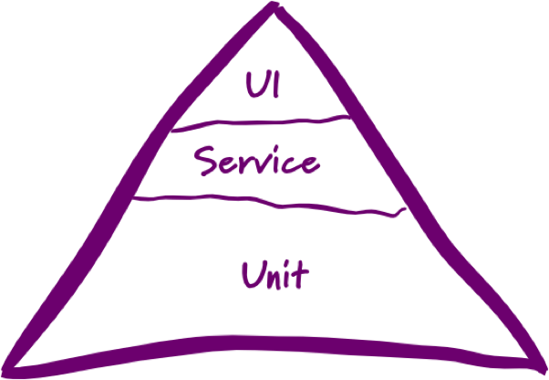

Protractor
The E2E Testing Framework
End 2 end?
Last line of quality defence
Utopia
Reality
TODO image here
PROS
- REAL BROWSERS
- CROSS PLATFORM
CONS
- SLOW
- NEEDS ENVIRONMENT
- HARD TO MAINTAIN
WEBDRIVER A.K.A Selenium
client-server arch
AVALIABLE BINDINGS
Java
Ruby
Python
C#
JS
Perl
Scala
JS?
NODEJS
Existing E2E JS Frameworks
- ng-scenarios => @deprecated
- nightwatch.js => no angular :(
- casper.js => headless only
Protractor arch 
Whats so special?
installation
//Install protractor globally
npm install protractor -g
//Install protractor in current folder
npm install protractor
//Install protractor in current folder
//and save to package.json as dependency
npm install protractor --save
//Install protractor globally
npm install protractor -g
//Install protractor in current folder
npm install protractor
//Install protractor in current folder
//and save to package.json as dependency
npm install protractor --save
How To Run?
- Test script file (captain)
- Config file (obvious)
jasmine
describe('some app feature', function() {
beforeEach(function() {
//DO SOME CODE BEFORE EACH "IT" BLOCK
});
it('should perform smth', function () {
//DO SOME TEST HERE
});
afterEach(function() {
//DO SMTH AFTER EACH "IT" BLOCK
});
});
describe('some app feature', function() {
beforeEach(function() {
//DO SOME CODE BEFORE EACH "IT" BLOCK
});
it('should perform smth', function () {
//DO SOME TEST HERE
});
afterEach(function() {
//DO SMTH AFTER EACH "IT" BLOCK
});
});
cucumber
Feature: Homepage
As a user
I want to visit app page
So that I can test protractor with cucumber
Scenario: Visit Calulator app
Given I am on the app page
Then I should see a "first value" input
And I should see a "do" button
And I should see a "logical operation" select
global vars
- browser
- element
- by
browser.get('www.google.com') // -> will open google com
element(by.model("someModel")).click() // -> will find element
//with ng-model attr
//and will click it
selectors
- by.binding
- by.model
- by.repeater
config file
//config.js
exports.config = {
directConnet: false,
seleniumAddress : "http://localhost:4444/wd/hub",
specs: [
'../spec.js'
],
capabilities: {
'browserName': 'chrome'
}
};
code walk-through
summary
- angular support
- can be used with phantom js on gulp "watch" phase
- not supporting mannually bootstraped angular
- debugging promises is sometimes pain
- slow as every real browser tests